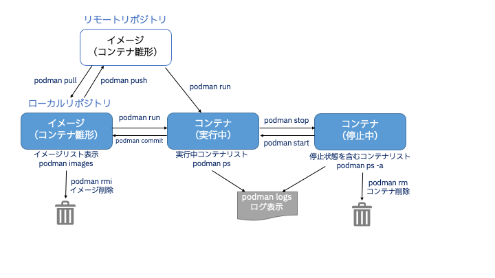

Podmanの基本
基本的なpodmanコマンド
Podman / Dockerはコンテナイメージのビルド/プッシュ/プル、コンテナの実行/停止/再開/削除、してみましょう。

1. podman pull
コンテナイメージをコンテナレジストリからダウンロードします。
Publicなコンテナレジストリはいくつかありますが、有名なDockerのデフォルトレジストリである「docker.io」から「nginx」というコンテナを、Red HatのコンテナレジストリSaaSである「Quay.io」から「busybox」というコンテナイメージをダウンロードしてみましょう。
実行例
```shell $ podman pull docker.io/nginx Trying to pull docker.io/library/nginx:latest... Getting image source signatures Copying blob sha256:75576236abf5959ff23b741ed8c4786e244155b9265db5e6ecda9d8261de529f Copying blob sha256:26c5c85e47da3022f1bdb9a112103646c5c29517d757e95426f16e4bd9533405 Copying blob sha256:4f3256bdf66bf00bcec08043e67a80981428f0e0de12f963eac3c753b14d101d Copying blob sha256:2019c71d56550b97ce01e0b6ef8e971fec705186f2927d2cb109ac3e18edb0ac Copying blob sha256:8c767bdbc9aedd4bbf276c6f28aad18251cceacb768967c5702974ae1eac23cd Copying blob sha256:78e14bb05fd35b58587cd0c5ca2c2eb12b15031633ec30daa21c0ea3d2bb2a15 Copying config sha256:6efc10a0510f143a90b69dc564a914574973223e88418d65c1f8809e08dc0a1f Writing manifest to image destination Storing signatures 6efc10a0510f143a90b69dc564a914574973223e88418d65c1f8809e08dc0a1f podman pull quay.io/quay/busybox<details>
<summary>実行例</summary>
```
$ podman pull quay.io/quay/busybox
Trying to pull quay.io/quay/busybox:latest...
Getting image source signatures
Copying blob sha256:ee780d08a5b4de5192a526d422987f451d9a065e6da42aefe8c3b20023a250c7
Copying blob sha256:9c075fe2c773108d2fe2c18ea170548b0ee30ef4e5e072d746e3f934e788b734
Copying config sha256:e3121c769e3948dd4a7e1764f4841d044efcfda47804a5384597b7b117054c4c
Writing manifest to image destination
Storing signatures
e3121c769e3948dd4a7e1764f4841d044efcfda47804a5384597b7b117054c4c
ダウンロードはこれだけです。簡単ですね。
2. podman images
ダウンロード(pull)したコンテナイメージを一覧表示してみましょう。
実行例
``` $ podman images REPOSITORY TAG IMAGE ID CREATED SIZE docker.io/library/nginx latest 6efc10a0510f 8 days ago 147 MB quay.io/quay/busybox latest e3121c769e39 2 years ago 1.45 MB podman run -it --name test1 busybox sh podman ps現在実行中のコンテナが1つもないことがわかります。
続けて、停止状態を含めたコンテナの状態を確認します。 -aオプションをつけてpsコマンドを実行すると、停止中を含めた全コンテナが表示されます。
実行例
先ほど起動したbusyboxコンテナが停止(Exit)状態にあることがわかります。
5. podman run -d
先ほどのコンテナは、exitすると同時に停止してしまいました。
通常、コンテナは処理を実行するとフォアグラウンドで実行され、ユーザがexitコマンドなどで停止させると、実際に停止してしまいます。
それだとwebサーバのような常時起動しておきたいコンテナは困ります。
その場合、-dオプション (デタッチドモード, daemonではない)でバックグラウンド起動させることができます。早速nginxというwebサーバをバックグラウンド実行してみましょう。
実行例
これは、8080ポートでnginxというWebサーバが起動しhttpリクエストを8080ポートで待っている状態です。 ブラウザで http://localhost:8080 にアクセスしてください。nginxのデフォルトページが表示されます。
http://localhost:8080 へのアクセス例
$ curl http://localhost:8080
<!DOCTYPE html>
<html>
<head>
<title>Welcome to nginx!</title>
<style>
html { color-scheme: light dark; }
body { width: 35em; margin: 0 auto;
font-family: Tahoma, Verdana, Arial, sans-serif; }
</style>
</head>
<body>
<h1>Welcome to nginx!</h1>
<p>If you see this page, the nginx web server is successfully installed and
working. Further configuration is required.</p>
<p>For online documentation and support please refer to
<a href="http://nginx.org/">nginx.org</a>.<br/>
Commercial support is available at
<a href="http://nginx.com/">nginx.com</a>.</p>
<p><em>Thank you for using nginx.</em></p>
</body>
</html>
では、コンテナが起動状態かどうか確認してみましょう。podman ps を実行します。
$ podman ps
CONTAINER ID IMAGE COMMAND CREATED STATUS PORTS NAMES
97c59775a1fa docker.io/library/nginx:latest nginx -g daemon o... 3 days ago Up 3 days ago 0.0.0.0:0->0/tcp docker-nginx
namesがdocker-nginxのコンテナが表示されています。 docker-nginxが起動中ということです。 もう一度ブラウザで http://localhost:8080 にアクセスしてください。やはりnginxのデフォルトページが表示されます。
6. podman logs
コンテナのログを確認できます。
このログは、標準出力(stdout)と標準エラー(stderr)へ書き出されたデータです。
Linuxのtail -fと同様に、-fオプションを付けることで稼働しているコンテナのログをリアルタイムに確認できます。
以下を実行したら、もう一度ブラウザで http://localhost:8080 にアクセスしてみてください。
ログにアクセスログが出ましたか？ 出ない方はブラウザをリロードしてみてください。
7. podman stop / podman kill
docker-nginxを停止しましょう。
stopコマンドを実行したら、コンテナが停止していることを確認します。
実行例
$ podman stop docker-nginx
docker-nginx
$ podman ps -a
CONTAINER ID IMAGE COMMAND CREATED STATUS PORTS NAMES
b7298b05638a quay.io/quay/busybox:latest sh 3 days ago Exited (0) 3 days ago test1
97c59775a1fa docker.io/library/nginx:latest nginx -g daemon o... 3 days ago Exited (0) 3 days ago 0.0.0.0:0->0/tcp docker-nginx
docker-nginxコンテナのSTATUSがExited(停止)となっています。つまり、停止させることができました。
ちなみに、podman stopと同じくコンテナプロセスを停止する役割としてpodman killがあります。 podman stopはSIGTERM(プロセス通常停止)でコンテナプロセスを停止しますが、podman kill は SIGKILL(強制停止)でプロセスを停止しています。 通常はpodman stopでプロセスを停止し、それで止まらない場合、異常時などにkillを使うようにしましょう。
8. podman start
止めた docker-nginx コンテナを起動します。
起動しているか確認します。
実行例
docker-nginxコンテナのSTATUSがUp(起動)になっています。つまり、起動できました。
もう一度ブラウザで http://localhost:8080 にアクセスしてください。nginxのデフォルトページが表示されます。
9. podman rm
使わないコンテナを削除します。
実行例
エラーが表示されました。起動中のコンテナは、一度停止してから削除できます。 (Linuxのrmコマンドと同じく、-f オプションで強制的に削除可能です)
では、すでに止まっている他のコンテナを削除しましょう。busyboxコンテナは停止状態です。このコンテナの名前はtest1と名付けていました。
実行例
リストから test1 コンテナ(busybox)が消えました。
10. podman rmi
test1 コンテナはコンテナプロセスとしては削除しましたが、イメージ自体は残っています。
実行例
このイメージさえも削除してみましょう。
実行例
実行例
消えましたね。これでローカルリポジトリからイメージさえも消えました。 次回利用する際は、再度Quay.ioからダウンロードしローカルリポジトリに保存した上でコンテナ起動、という流れになります。
11. podman exec 起動中のコンテナにアクセス
コンテナは複数端末で共有利用可能です。実際に試してみましょう。
ターミナル[1]で以下を実行
実行例
$ podman run -it ubuntu bash
Resolved "ubuntu" as an alias (/etc/containers/registries.conf.d/000-shortnames.conf)
Trying to pull docker.io/library/ubuntu:latest...
Getting image source signatures
Copying blob sha256:2ab09b027e7f3a0c2e8bb1944ac46de38cebab7145f0bd6effebfe5492c818b6
Copying config sha256:08d22c0ceb150ddeb2237c5fa3129c0183f3cc6f5eeb2e7aa4016da3ad02140a
Writing manifest to image destination
Storing signatures
root@670148e96359:/#
Ubuntuが起動し、bashが実行されています。
別のターミナル「ターミナル[2]」で実行
実行例
$ podman run -it --name fedora-t2 fedora bash
Resolved "fedora" as an alias (/etc/containers/registries.conf.d/000-shortnames.conf)
Trying to pull registry.fedoraproject.org/fedora:latest...
Getting image source signatures
Copying blob sha256:de924d42b91d6d6898968a85cf956b216065442e876409dc098996c2f9f6282d
Copying config sha256:c9bfca6d0ac2a242226fa68db587ab26836e4b3fb5458284be7505e95b12c965
Writing manifest to image destination
Storing signatures
[root@f18f6f12358e /]#
fedoraが起動し、bashが実行されています。
さらに別のターミナル「ターミナル[3]」で実行
実行例
ubuntuとfedora-t2が起動していることを確認できます。
ターミナル[1]で実行していたubuntu bashでexitし、ターミナル[3]でもう一度
を実施します。実行例
ubuntuが消えてfedora-t2のみが起動していることを確認します。
ターミナル[1]で以下を実行し、ターミナル[2]で起動しているfedora-t2にターミナル[1]からbashが起動できることを確認します。
起動しているコンテナに、他のターミナルからアクセスすることもできます。
なお、run ではなく exec である点に留意してください。
execは起動したコンテナ上でコマンド(今回はbash)を実行するコマンドで、runはコンテナを起動(createとstartを一気に実行)するコマンドになります。